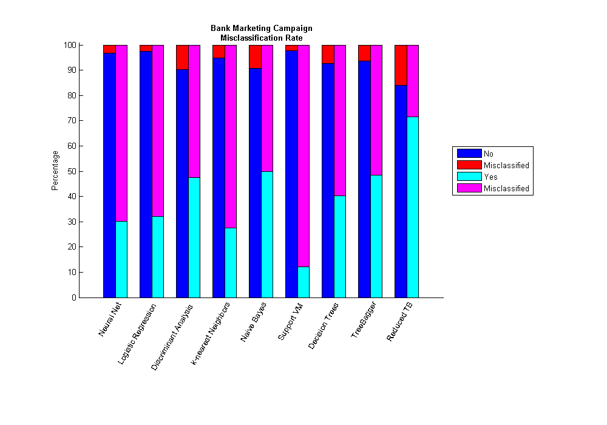

Machine Learning using MATLAB
Machine learning techniques are often used for financial analysis and decision-making tasks such as accurate forecasting, classification of risk, estimating probabilities of default, and data mining. However, implementing and comparing different machine learning techniques to choose the best approach can be challenging. Machine learning is synonymous with Non-parametric modeling techniques. The term non-parametric is not meant to imply that such models completely lack parameters but that the number and nature of the parameters are flexible and determined from data.
In this example, several supervised machine learning techniques available in MATLAB are highlighted. One may apply one or more of the techniques and compare them to determine the most suitable ones for different data sets.
Contents
- Description of the Data
- Import Existing Data
- Data Exploration
- Convert Categorical Data into Nominal Arrays
- Visualize Data
- Prepare the Data: Response and Predictors
- Cross Validation
- Prepare Predictors/Response for Neural Networks
- Speed up Computations using Parallel Computing
- Neural Networks
- Other Machine Learning Techniques
- Generalized Linear Model - Logistic Regression
- Discriminant Analysis
- Classification Using Nearest Neighbors
- Naive Bayes Classification
- Support Vector Machines
- Decision Trees
- Ensemble Learning: TreeBagger
- Compare Results
- ROC Curve for Classification by TreeBagger
- Simplify Model - Optional
- Estimating a Good Ensemble Size
- Estimating Feature Importance
- Sequential Feature Selection
- TreeBagger with Reduced Feature Set
- Compare Results
- ROC Curve for Classification by Reduced TreeBagger
- Shut Down Workers
- References
Description of the Data
A publicly available dataset is utilized. It's details are described in [Moro et al., 2011]. The data is related with direct marketing campaigns of a Portuguese banking institution. The marketing campaigns were based on phone calls. Often, more than one contact to the same client was required in order to assess if the product (bank term deposit) would be or would not be subscribed.
The classification goal is to predict if the client will subscribe a term deposit or not (variable y). The data set contains 45211 observations capturing 16 attributes/features.
Attributes:
- age (numeric)
- job : type of job (categorical: "admin.","unknown","unemployed","management","housemaid","entrepreneur","student", "blue-collar","self-employed","retired","technician","services")
- marital : marital status (categorical: "married","divorced","single"; note: "divorced" means divorced or widowed)
- education (categorical: "unknown","secondary","primary","tertiary")
- default: has credit in default? (binary: "yes","no")
- balance: average yearly balance, in euros (numeric)
- housing: has housing loan? (binary: "yes","no")
- loan: has personal loan? (binary: "yes","no")
- contact: contact communication type (categorical: "unknown","telephone","cellular")
- day: last contact day of the month (numeric)
- month: last contact month of year (categorical: "jan", "feb", "mar", ..., "nov", "dec")
- duration: last contact duration, in seconds (numeric)
- campaign: number of contacts performed during this campaign and for this client (numeric, includes last contact)
- pdays: number of days that passed by after the client was last contacted from a previous campaign (numeric, -1 means client was not previously contacted)
- previous: number of contacts performed before this campaign and for this client (numeric)
- poutcome: outcome of the previous marketing campaign (categorical: "unknown","other","failure","success")
Output variable (desired target):
- y: has the client subscribed a term deposit? (binary: "yes","no")
Import Existing Data
In this example, the data is loaded from the available CSV-file. One may make use of the interactive tools to load the data and auto-generate the code for the purpose of automation.
The data is loaded into dataset arrays. Dataset arrays make it easier to work with data of different datatypes to be stored as part of the same matrix.
% Autogenerated code for reading bank = ImportBankData('bank.csv'); names = bank.Properties.VarNames;
Data Exploration
One may bring in data from a variety of sources. After that, it is possible to visualize the data, determine interesting patterns (if they exist), build intuition around the data, find outliers or missing information. Many of these typical tasks may be performed interactively.
Convert Categorical Data into Nominal Arrays
Categorical data contains discreet pieces of information, for instance, the attribute, marital status in this dataset. One can open the variable in Variable Editor and convert categorical attributes into nominal arrays using the interactive tools. MATLAB will prompt you with the command in the Command Window.
Also, dataset arrays allow one to slice the data easily in different ways.
% Remove unnecessary double quotes from certain attributes bank = datasetfun(@removequotes,bank,'DatasetOutput',true); % Convert all the categorical variables into nominal arrays [nrows, ncols] = size(bank); category = false(1,ncols); for i = 1:ncols if isa(bank.(names{i}),'cell') || isa(bank.(names{i}),'nominal') category(i) = true; bank.(names{i}) = nominal(bank.(names{i})); end end % Logical array keeping track of categorical attributes catPred = category(1:end-1); % Set the random number seed to make the results repeatable in this script rng('default');
Visualize Data
One can open the variable bank, in the Variable Editor and interactive create different kinds of plots by selecting 1 or more columns.
As you create the plots, MATLAB tries to help by echoing the commands on to the Command Window.
% Bank balance vs. Last call duration plot, differentiated by outcome of the campaign gscatter(bank.balance,bank.duration,bank.y) % Label the plot xlabel('Bank balance') ylabel('Last contact duration') title('Outcome')
Prepare the Data: Response and Predictors
We can segregate the data into response and predictors. This will make it easier to call subsequent functions which expect the data in this format.
% Response Y = bank.y; disp('Marketing Campaign') tabulate(Y) % Predictor matrix X = double(bank(:,1:end-1));
Marketing Campaign
Value Count Percent
no 4000 88.48%
yes 521 11.52%
Cross Validation
Cross validation is almost an inherent part of machine learning. Cross validation may be used to compare the performance of different predictive modeling techniques. In this example, we use holdout validation. Other techniques including k-fold and leave-one-out cross validation are also available.
In this example, we partition the data into training set and test set. The training set will be used to calibrate/train the model parameters. The trained model is then used to make a prediction on the test set. Predicted values will be compared with actual data to compute the confusion matrix. Confusion matrix is one way to visualize the performance of a machine learning technique.
% In this example, we will hold 40% of the data, selected randomly, for % test phase. cv = cvpartition(length(bank),'holdout',0.40); % Training set Xtrain = X(training(cv),:); Ytrain = Y(training(cv),:); % Test set Xtest = X(test(cv),:); Ytest = Y(test(cv),:); disp('Training Set') tabulate(Ytrain) disp('Test Set') tabulate(Ytest)
Training Set
Value Count Percent
no 2388 88.02%
yes 325 11.98%
Test Set
Value Count Percent
no 1612 89.16%
yes 196 10.84%
Prepare Predictors/Response for Neural Networks
When using neural networks the appropriate way to include categorical predictors is as dummy indicator variables. An indicator variable has values 0 and 1.
[XtrainNN, YtrainNN, XtestNN, YtestNN] = preparedataNN(bank, catPred, cv);
Speed up Computations using Parallel Computing
If Parallel Computing Toolbox is available, the computation will be distributed to 2 workers for speeding up the evaluation.
if matlabpool('size') == 0 matlabpool open 2 end
Starting matlabpool using the 'local' profile ... connected to 2 workers.
Neural Networks
Neural Network Toolbox supports supervised learning with feedforward, radial basis, and dynamic networks. It supports both classification and regression algorithms. It also supports unsupervised learning with self-organizing maps and competitive layers.
One can make use of the interactive tools to setup, train and validate a neural network. It is then possible to auto-generate the code for the purpose of automation. In this example, the auto-generated code has been updated to utilize a pool of workers, if available. This is achieved by simply setting the useParallel flag while making a call to train.
[net,~] = train(net,inputs,targets,'useParallel','yes');
If a GPU is available, it may be utilized by setting the useGPU flag.
The trained network is used to make a prediction on the test data and confusion matrix is generated for comparison with other techniques.
% Use modified autogenerated code to train the network [~, net] = NNfun(XtrainNN,YtrainNN); % Make a prediction for the test set Y_nn = net(XtestNN'); Y_nn = round(Y_nn'); % Compute the confusion matrix C_nn = confusionmat(YtestNN,Y_nn); % Examine the confusion matrix for each class as a percentage of the true class C_nn = bsxfun(@rdivide,C_nn,sum(C_nn,2)) * 100 %#ok<*NOPTS>
C_nn =
96.774 3.2258
69.898 30.102
Other Machine Learning Techniques
Statistics Toolbox features a number of supervised and unsupervised machine learning techniques. It supports both classification and regression algorithms. The supervised learning techniques range from non-linear regression, generalized linear regression, discriminant analysis, SVMs to decision trees and ensemble methods.
In this example, we make use of some of these techniques to perform predictive modeling. Observe that once the data has been prepared, the syntax to utilize the different modeling techniques is very similar. Most of these techniques can handle categorical predictors. The user can conveniently supply information about different parameters associated with the different algorithms.
Generalized Linear Model - Logistic Regression
In this example, a logistic regression model is leveraged. Response may follow normal, binomial, Poisson, gamma, or inverse Gaussian distribution.
Since the response in this data set is binary, binomial distribution is suitable.
% Train the classifier glm = GeneralizedLinearModel.fit(Xtrain,double(Ytrain)-1,'linear','Distribution','binomial','link','logit','CategoricalVars',catPred); % Make a prediction for the test set Y_glm = glm.predict(Xtest); Y_glm = round(Y_glm) + 1; % Compute the confusion matrix C_glm = confusionmat(double(Ytest),Y_glm); % Examine the confusion matrix for each class as a percentage of the true class C_glm = bsxfun(@rdivide,C_glm,sum(C_glm,2)) * 100
C_glm =
97.581 2.4194
67.857 32.143
Discriminant Analysis
Discriminant analysis is a classification method. It assumes that different classes generate data based on different Gaussian distributions. Linear discriminant analysis is also known as the Fisher discriminant.
Here, a quadratic discriminant classifier is used.
% Train the classifier da = ClassificationDiscriminant.fit(Xtrain,Ytrain,'discrimType','quadratic'); % Make a prediction for the test set Y_da = da.predict(Xtest); % Compute the confusion matrix C_da = confusionmat(Ytest,Y_da); % Examine the confusion matrix for each class as a percentage of the true class C_da = bsxfun(@rdivide,C_da,sum(C_da,2)) * 100
C_da =
90.261 9.7395
52.551 47.449
Classification Using Nearest Neighbors
Categorizing query points based on their distance to points in a training dataset can be a simple yet effective way of classifying new points. Various distance metrics such as euclidean, correlation, hamming, mahalonobis or your own distance metric may be used.
% Train the classifier knn = ClassificationKNN.fit(Xtrain,Ytrain,'Distance','seuclidean'); % Make a prediction for the test set Y_knn = knn.predict(Xtest); % Compute the confusion matrix C_knn = confusionmat(Ytest,Y_knn); % Examine the confusion matrix for each class as a percentage of the true class C_knn = bsxfun(@rdivide,C_knn,sum(C_knn,2)) * 100
C_knn =
94.789 5.2109
72.449 27.551
Naive Bayes Classification
Naive Bayes classification is based on estimating P(X|Y), the probability or probability density of features X given class Y. The Naive Bayes classification object provides support for normal (Gaussian), kernel, multinomial, and multivariate multinomial distributions
% The multivariate multinomial distribution (_mvmn_) is appropriate for % categorical features dist = repmat({'normal'},1,ncols-1); dist(catPred) = {'mvmn'}; % Train the classifier Nb = NaiveBayes.fit(Xtrain,Ytrain,'Distribution',dist); % Make a prediction for the test set Y_Nb = Nb.predict(Xtest); % Compute the confusion matrix C_nb = confusionmat(Ytest,Y_Nb); % Examine the confusion matrix for each class as a percentage of the true class C_nb = bsxfun(@rdivide,C_nb,sum(C_nb,2)) * 100
C_nb =
90.881 9.1191
50 50
Support Vector Machines
Support vector machine (SVM) is supported for binary response variables. An SVM classifies data by finding the best hyperplane that separates all data points of one class from those of the other class.
opts = statset('MaxIter',30000); % Train the classifier svmStruct = svmtrain(Xtrain,Ytrain,'kernel_function','rbf','kktviolationlevel',0.1,'options',opts); % Make a prediction for the test set Y_svm = svmclassify(svmStruct,Xtest); C_svm = confusionmat(Ytest,Y_svm); % Examine the confusion matrix for each class as a percentage of the true class C_svm = bsxfun(@rdivide,C_svm,sum(C_svm,2)) * 100
C_svm =
97.643 2.3573
87.755 12.245
Decision Trees
Classification trees and regression trees are two kinds of decision trees. A decision tree is a flow-chart like structure in which internal node represents test on an attribute, each branch represents outcome of test and each leaf node represents a response (decision taken after computing all attributes). Classification trees give responses that are nominal, such as 'true' or 'false'. Regression trees give numeric responses.
tic % Train the classifier t = ClassificationTree.fit(Xtrain,Ytrain,'CategoricalPredictors',catPred); toc % Make a prediction for the test set Y_t = t.predict(Xtest); % Compute the confusion matrix C_t = confusionmat(Ytest,Y_t); % Examine the confusion matrix for each class as a percentage of the true class C_t = bsxfun(@rdivide,C_t,sum(C_t,2)) * 100
Elapsed time is 0.441040 seconds.
C_t =
92.68 7.3201
59.694 40.306
Ensemble Learning: TreeBagger
Bagging stands for bootstrap aggregation. Every tree in the ensemble is grown on an independently drawn sample of input data. To compute prediction for the ensemble of trees, TreeBagger takes an average of predictions from individual trees (for regression) or takes votes from individual trees (for classification). Ensemble techniques such as bagging combine many weak learners to produce a strong learner.
From a marketing perspective, as we are creating this predictive model, it may be more important for us to classify yes correctly than a no. If that is the case, we can include our opinion using the cost matrix. Here, cost matrix specifies that it is 5 times more costly to classify a yes as a no.
% Cost of misclassification cost = [0 1 5 0]; opts = statset('UseParallel',true); % Train the classifier tb = TreeBagger(150,Xtrain,Ytrain,'method','classification','categorical',catPred,'Options',opts,'OOBVarImp','on','cost',cost); % Make a prediction for the test set [Y_tb, classifScore] = tb.predict(Xtest); Y_tb = nominal(Y_tb); % Compute the confusion matrix C_tb = confusionmat(Ytest,Y_tb); % Examine the confusion matrix for each class as a percentage of the true class C_tb = bsxfun(@rdivide,C_tb,sum(C_tb,2)) * 100
C_tb =
93.61 6.3896
51.531 48.469
Compare Results
This visualization function is making use of a couple files downloaded from MATLAB Central, the user community website. We are leveraging social computing along the way to help us in our effort.
Cmat = [C_nn C_glm C_da C_knn C_nb C_svm C_t C_tb];
labels = {'Neural Net ', 'Logistic Regression ', 'Discriminant Analysis ',...
'k-nearest Neighbors ', 'Naive Bayes ', 'Support VM ', 'Decision Trees ', 'TreeBagger '};
comparisonPlot( Cmat, labels )

ROC Curve for Classification by TreeBagger
Another way of exploring the performance of a classification ensemble is to plot its Receiver Operating Characteristic (ROC) curve.
[xx,yy,~,auc] = perfcurve(Ytest, classifScore(:,2),'yes'); figure; plot(xx,yy) xlabel('False positive rate'); ylabel('True positive rate') title('ROC curve for ''yes'', predicted vs. actual response (Test Set)') text(0.5,0.25,{'TreeBagger with full feature set',strcat('Area Under Curve = ',num2str(auc))},'EdgeColor','k');
Simplify Model - Optional
One may choose to examine the models further. One may even be able to improve the performance of the models. It is also possible to estimate importance of the different features, reduce the dimensionality of feature set etc.
Estimating a Good Ensemble Size
Examining the out-of-bag error may give an insight into determining a good ensemble size.
figure; plot(oobError(tb)); xlabel('Number of Grown Trees'); ylabel('Out-of-Bag Classification Error/Misclassification Probability');
Estimating Feature Importance
Feature importance measures the increase in prediction error if the values of that variable are permuted across the out-of-bag observations. This measure is computed for every tree, then averaged over the entire ensemble and divided by the standard deviation over the entire ensemble.
figure; bar(tb.OOBPermutedVarDeltaError); ylabel('Out-Of-Bag Feature Importance'); set(gca,'XTick',1:16) names2 = names; names2{5} = ' default'; set(gca,'XTickLabel',names2) % Use file submitted from a user at MATLAB Central to rotate labels rotateXLabels( gca, 60 ) [~,idxvarimp] = sort(tb.OOBPermutedVarDeltaError, 'descend');
Sequential Feature Selection
Feature selection reduces the dimensionality of data by selecting only a subset of measured features (predictor variables) to create a model. Selection criteria involves the minimization of a specific measure of predictive error for models fit to different subsets.
Sequential feature selection can be computationally intensive. It can benefit significantly from parallel computing.
opts = statset('UseParallel',true); critfun = @(Xtr,Ytr,Xte,Yte)featureImp(Xtr,Ytr,Xte,Yte,'TreeBagger'); % The top 5 features determined in the previous step have been included, % to reduce the number of combinations to be tried by sequentialfs [fs,history] = sequentialfs(critfun,Xtrain,Ytrain,'options',opts,'keepin',idxvarimp(1:5)); disp('Included features:'); disp(names(fs)');
Included features:
'education'
'default'
'housing'
'contact'
'month'
'duration'
'pdays'
'previous'
'poutcome'
TreeBagger with Reduced Feature Set
opts = statset('UseParallel',true); tb_r = TreeBagger(120, Xtrain(:,fs),Ytrain,'method','classification','categorical',catPred(:,fs),'Options',opts,'cost',cost); [Y_tb_r, classifScore] = tb_r.predict(Xtest(:,fs)); Y_tb_r = nominal(Y_tb_r); C_tb_r = confusionmat(Ytest,Y_tb_r); C_tb_r = bsxfun(@rdivide,C_tb_r,sum(C_tb_r,2)) * 100
C_tb_r =
84.057 15.943
28.571 71.429
Compare Results
Cmat = [C_nn C_glm C_da C_knn C_nb C_svm C_t C_tb C_tb_r];
labels = {'Neural Net ', 'Logistic Regression ', 'Discriminant Analysis ',...
'k-nearest Neighbors ', 'Naive Bayes ', 'Support VM ', 'Decision Trees ', 'TreeBagger ', 'Reduced TB '};
comparisonPlot( Cmat, labels )
 ROC Curve for Classification by Reduced TreeBagger
[xx,yy,~,auc] = perfcurve(Ytest, classifScore(:,2),'yes'); figure; plot(xx,yy) xlabel('False positive rate'); ylabel('True positive rate') title('ROC curve for ''yes'', predicted vs. actual response (Test Set)') text(0.5,0.25,{'TreeBagger with reduced feature set',strcat('Area Under Curve = ',num2str(auc))},'EdgeColor','k');
Shut Down Workers
Release the workers if there is no more work for them
if matlabpool('size') > 0 matlabpool close end
Sending a stop signal to all the workers ... stopped.
References
- [Moro et al., 2011] S. Moro, R. Laureano and P. Cortez. Using Data Mining for Bank Direct Marketing: An Application of the CRISP-DM Methodology. In P. Novais et al. (Eds.), Proceedings of the European Simulation and Modelling Conference - ESM'2011, pp. 117-121, Guimarães, Portugal, October, 2011. EUROSIS.